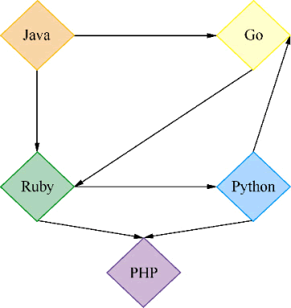
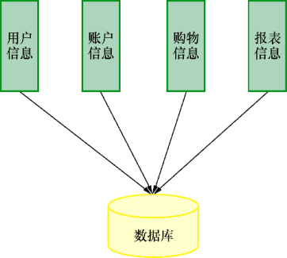
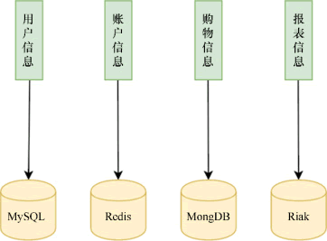
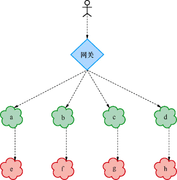
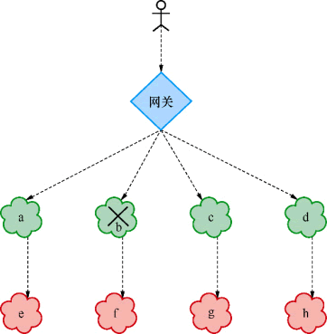
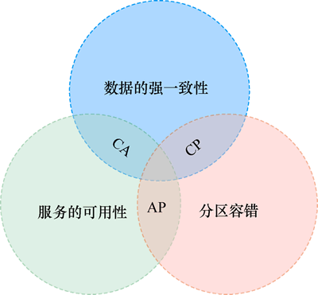
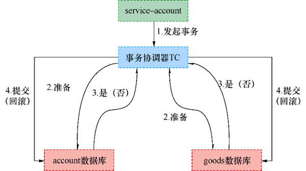
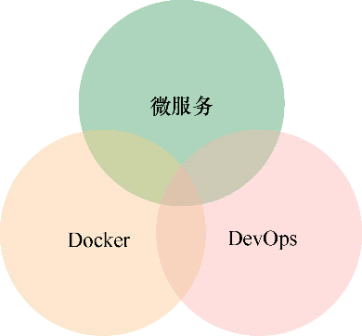

首页 > 编程笔记
微服务是什么（入门必读）
微服务是最近几年才出现的新名词，它在各大技术社区、博客、论坛和新闻报道中经常被提及，是程序员和架构师经常讨论的话题。
的确，微服务已经是技术圈的热门话题，那么到底什么是微服务呢？微服务产生的意义又是什么呢？微服务有哪些优势和缺点？下面让我来为你逐一阐述。
对于微服务，业界没有一个严格统一的定义，但是作为“微服务”这一名词的发明人，Martin Fowler 对微服务的定义似乎更具有权威性和指导意义，他的理解是：
简而言之，微服务架构的风格，就是将单一程序开发成一个微服务，每个微服务运行在自己的进程中，并使用轻量级机制通信，通常是 HTTP RESTFUL API。这些服务围绕业务能力来划分构建的，并通过完全自动化部署机制来独立部署。这些服务可以使用不同的编程语言，以及不同数据存储技术，以保证最低限度的集中式管理。
以我个人对这段话的理解，总结微服务具有如下特点。
根据这些特点，下面来进一步阐述微服务。
根据Martin Fowler的定义，微服务的“微”是按照业务来划分的。一个大的业务可以拆分成若干小的业务，一个小的业务又可以拆分成若干更小的业务，业务到底怎么拆分才算合适，这需要开发人员自己去决定。例如微博最常见的功能是微博内容、关注和粉丝，而其中微博内容又有点赞、评论等，如何将微博这个复杂的程序划分为单个的服务，需要由开发团队去决定。
按业务划分的微服务单元独立部署，运行在独立的进程中。这些微服务单元是高度组件化的模块，并提供了稳定的模块边界，服务与服务之间没有任何的耦合，有非常好的扩展性和复用性。
传统的软件开发模式通常由 UI 团队、服务端团队、数据库和运维团队构成，相应地将软件按照职能划分为 UI、服务端、数据库和运维等模块。通常这些开发人员各司其职，很少有人跨职能去工作。如果按照业务来划分服务，每个服务都需要独立的 UI、服务端、数据库和运维。也就是说，一个小的业务的微服务需要动用一个团队的人去协作，这显然增加了团队与团队之间交流协作的成本。所以产生了跨职能团队，这个团队负责一个服务的所有工作，包括UI、服务端和数据库。当这个团队只有1~2个人的时候，就对开发人员提出了更高的要求。
例如，用 Java 写的服务可以消费用 Go 语言写的服务，用 Go 写的服务又可以消费用 Ruby 写的服务。不同的服务采用不同的语言去实现，不同的平台去部署，它们之间使用 HTTP 进行通信，如图 1 所示。
服务与服务之间也可以通过轻量级的消息总线来通信，例如 RabbitMQ 和 Kaf ka 等。通过发送消息或者订阅消息来达到服务与服务之间通信的目的。
服务与服务通信的数据格式，一般为 JSON、XML，这两种数据格式与语言、平台、通信协议无关。一般来说，JSON 格式的数据比 XML 轻量，并且可读性也比 XML 要好。另外一种就是用 Protobuf 进行数据序列化，经过序列化的数据为二进制数据，它比 JSON 更轻量。用 Protobuf 序列化的数据为二进制数据，可读性非常差，需要反序列化才能够读懂。由于用 Protobuf 序列化的数据更为轻量，所以 Protobuf 在通信协议和数据存储上十分受欢迎。
服务与服务之间通过 HTTP 或者消息总线的方式进行通信，这种方式存在弊端，其通信机制是不可靠的，虽然成功率很高，但还是会有失败的时候。
例如，一个应用有这样几个业务：用户的信息、用户的账户、用户的购物车、数据报表服务等。典型的单体架构如下图所示。
微服务的一个特点就是按业务划分服务，服务与服务之间无耦合，就连数据库也是独立的。一个典型的微服务的架构就是每个微服务都有自己独立的数据库，数据库之间没有任何联系。这样做的好处在于，随着业务的不断扩张，服务与服务不需要提供数据库集成，而是提供API接口相互调用；还有一个好处是数据库独立，单业务的数据量少，易于维护，数据库性能有着明显的优势，数据库的迁移也很方便。
另外，随着存储技术的发展，数据库的存储方式不再仅仅是关系型数据库，非关系数据库的应用也非常广泛，例如 MongDB、Redis，它们有着良好的读写性能，因此越来越受欢迎。一个典型的微服务的系统，可能每一个服务的数据库都不相同，每个服务所使用的数据存储技术需要根据业务需求来选择，如下图所示。
随着服务数量的增加，如果微服务按照单体架构的部署方式，部署的难度会呈指数增加。业务的粒度划分得越细，微服务的数量就越多，这时需要更稳定的部署机制。随着技术的发展，尤其是 Docker 容器技术的推进、Kubernetes 容器编排技术的发展，以及自动化部署工具（例如开源组件 Jenkins）的出现，自动化部署变得越来越简单。
自动化部署可以提高部署的效率，减少人为的控制，部署过程中出现错误的概率降低，部署过程的每一步自动化，提高软件的质量。构建一个自动化部署的系统，虽然在前期需要开发人员或者运维人员的学习，但是对于整个软件系统来说是一个全新的概念。在软件系统的整个生命周期之中，每一步是由程序控制的，而不是人为控制，软件的质量提高到了一个新的高度。
随着 DevOps 这种全新概念的推进，自动化部署必然会成为微服务部署的一种方式。
目前流行的微服务框架中，例如 Spring Cloud 支持使用 Eureka、Zookeeper 和 Consul 来注册服务和发现服务，另外，Etcd 和 Nacos 等都是非常优秀的服务注册与发现组件。
分布式系统的复杂任务通过计算机之间的相互协作来完成，当然简单的任务也可以在一台计算机上完成。
分布式系统通过网络协议来通信，所以分布式系统在空间上没有任何限制，即分布式服务器可以部署不同的机房和不同的地区。
微服务架构是分布式架构，分布式系统比单体系统更加复杂，主要体现在服务的独立性和服务相互调用的可靠性，以及分布式事务、全局锁、全局Id等，而单体系统不需要考虑这些复杂性。
另外，分布式系统的应用都是集群化部署，会给数据一致性带来困难。分布式系统中的服务通信依赖于网络，网络不好，必然会对分布式系统带来很大的影响。在分布式系统中，服务之间相互依赖，如果一个服务出现了故障或者是网络延迟，在高并发的情况下，会导致线程阻塞，在很短的时间内该服务的线程资源会消耗殆尽，最终使得该服务不可用。由于服务的相互依赖，可能会导致整个系统的不可用，这就是“雪崩效应”。为了防止此类事件的发生，分布式系统必然要采取相应的措施，例如“熔断机制”。
例如在微服务系统中，有 a、b、c、d、e、f、g、h 等多个服务，用户的请求通过网关后，再到具体的服务，服务之间相互依赖，例如服务 b 依赖于服务 f，一个对外暴露的 API 接口需要服务 b 和服务 f 相互协作才能完成。服务之间相互依赖的架构图如下图所示。
如果此时服务 b 出现故障或者网络延迟，在高并发的情况下，服务 b 会出现大量的线程阻塞，有可能在很短的时间内线程资源就被消耗完了，导致服务 b 的不可用。如果服务 b 为较底层的服务，会影响到其他服务，导致其他服务会一直等待服务 b 的处理。如果服务 b 迟迟不处理，大量的网络请求不仅仅堆积在服务 b，而且会堆积到依赖于服务 b 的其他服务。而因服务 b 出现故障影响的服务，也会影响到依赖于因服务 b 出现故障影响的服务的其他服务，从而由服务 b 开始，影响到整个系统，导致整个系统的不可用。这是一件非常可怕的事，因为服务器运营商的不可靠，必然会导致服务的不可靠，而网络服务商的不可靠性，也会导致服务的不可靠。在高并发的场景下，稍微有点不可靠，由于故障的传播性，会导致大量的服务不可用，甚至导致整个系统崩溃。
为了解决这一难题，微服务架构引入了熔断机制。当服务 b 出现故障，请求失败次数超过设定的阀值之后，服务 b 就会开启熔断器，之后服务 b 不进行任何的业务逻辑操作，执行快速失败，直接返回请求失败的信息。其他依赖于b的服务就不会因为得不到响应而线程阻塞，这时除了服务 b 和依赖于服务 b 的部分功能不可用外，其他功能正常。熔断服务 b 如下图所示。
熔断器还有另一个机制，即自我修复的机制。当服务 b 熔断后，经过一段时间，半打开熔断器。半打开的熔断器会检查一部分请求是否正常，其他请求执行快速失败，检查的请求如果响应成功，则可以判定服务 b 正常了，就会关闭服务 b 的熔断器；如果服务 b 还不正常，则继续打开熔断器。这种自我熔断机制和自我修复机制在微服务架构中有着重要的意义，一方面，它使程序更加健壮；另一方面，为开发和运维减少很多不必要的工作。
最后，熔断组件往往会提供一系列的监控，例如服务可用与否、熔断器是否被打开、目前的吞吐量、网络延迟状态的监控等，从而很容易让开发人员和运维人员实时地了解服务的状况。
1) 将一个复杂的业务分解成若干小的业务，每个业务拆分成一个服务，服务的边界明确，将复杂的问题简单化。服务按照业务拆分，编码也是按照业务来拆分，代码的可读性和可扩展性增加。新人加入团队，不需要了解所有的业务代码，只需要了解他所接管的服务的代码，新人学习时间成本减少。
2) 由于微服务系统是分布式系统，服务与服务之间没有任何的耦合。随着业务的增加，可以根据业务再拆分服务，具有极强的横向扩展能力。随着应用的用户量的增加，并发量增加，可以将微服务集群化部署，从而增加系统的负载能力。简而言之，微服务系统的微服务单元具有很强的横向扩展能力。
3) 服务与服务之间通过 HTTP 网络通信协议来通信，单个微服务内部高度耦合，服务与服务之间完全独立，无耦合。这使得微服务可以采用任何的开发语言和技术来实现。开发人员不再被强迫使用公司以前的技术或者已经过时的技术，而是可以自由选择最适合业务场景的或者最适合自己的开发语言和技术，提高开发效率、降低开发成本。
4) 如果是一个单体的应用，由于业务的复杂性、代码的耦合性，以及可能存在的历史问题。在重写一个单体应用时，要求重写的应用的人员了解所有的业务，所以重写单体应用是非常困难的，并且重写风险也较高。如果是微服务系统，由于微服务系统是按照业务的进行拆分的，并且有坚实的服务边界，所以重写某个服务就相当于重写某一个业务的代码，非常简单。
5) 微服务的每个服务单元都是独立部署的，即独立运行在某个进程里。微服务的修改和部署对其他服务没有影响。试想，假设一个应用只有一个简单的修改，如果是单体架构，需要测试和部署整个应用；而如果采用微服务架构，只需要测试并部署被修改的那个服务，这就大大减少了测试和部署的时间。
6) 微服务在 CAP 理论中采用的是 AP 架构，即具有高可用和分区容错的特点。高可用主要体现在系统 7×24 小时不间断的服务，它要求系统有大量的服务器集群，从而提高了系统的负载能力。另外，分区容错也使得系统更加健壮。
此外，服务与服务之间相互依赖，如果修改某一个服务，会对另一个服务产生影响，如果掌控不好，会产生不必要的麻烦。由于服务的依赖性，测试也会变得复杂，比如修改一个比较基础的服务，可能需要重启所有的服务才能完成测试。
CAP 理论是由 Eric Brewer 在 2000 年 PODC 会议上提出的，该理论在两年后被证明成立。CAP 理论告诉架构师不要妄想设计出同时满足三者的系统，应该有所取舍，设计出适合业务的系统。CAP 理论如下图所示。
在分布式系统中，P 是基本要求，而单体服务是 CA 系统。微服务系统通常是一个 AP 系统，即同时满足了可用性和分区容错。这就有了一个难题：在分布式系统中如何保证数据的一致性？这就是大家经常讨论的分布式事务。
在微服务系统中，每个服务都是独立的进程单元，每个服务都有自己的数据库。通常情况下，只有关系型数据库在特定的数据引擎下才支持事务，而大多数非关系型数据库是不支持事务的，例如 MongDB 是不支持事务的，而 Redis 是支持事务的。在微服务架构中，分布式事务一直是一个难以解决的问题，业界给出了很多解决办法，比如两阶段提交、三阶段提交、TCC等。
网上购物在日常生活中是一个非常普通的场景，假设我在淘宝上购买了一部手机，需要从我的账户中扣除1000元钱，同时手机的库存数量需要减 1。当然需要在卖方的账户中加 1000 元钱，为了使案例简单化，暂时不用考虑。
如果这是一个单体应用，并且使用支持事务的 MySQL 数据库（InnoDB 数据库引擎才支持事务），我们可能这样写代码：
第一阶段，service-account 发起一个分布式事务，交给事务协调器 TC 处理，事务协调器 TC 向所有参与的事务的节点发送处理事务操作的准备操作。所有的参与节点执行准备操作，将 Undo 和 Redo 信息写进日志，并向事务管理器返回准备操作是否成功。
第二阶段，事务管理器收集所有节点的准备操作是否成功，如果都成功，则通知所有的节点执行提交操作；如果有一个失败，则执行回滚操作。
两阶段提交，将事务分成两部分能够大大提高分布式事务成功的概率。如果在第一阶段都成功了，而执行第二阶段的某一个节点失败，仍然导致数据的不准确，这时一般需要人工去处理，这就是当初在第一步记录日志的原因。另外，如果分布式事务涉及的节点很多，某一个节点的网络出现异常会导致整个事务处于阻塞状态，大大降低数据库的性能。所以一般情况下，尽量少用分布式事务。
对于微服务的拆分原则，Martin Fowler 给出的建议是；服务是可以被替换和更新的。也就是服务和服务之间无耦合，任何一个服务都可以被替换，服务有自己严格的边界。
当然这个原则很抽象，根据具体的业务场景来拆分服务，需要依靠团队人员对业务的熟悉程度和理解程度，并考虑与已有架构的冲突、业务的扩展性、开发的风险和未来业务的发展等诸多因素。
领域驱动设计是一个全新的概念，也是一个比较理想的微服务拆分的理念。领域驱动设计通过代码和数据分析找到合理的切分点，并通过数据分析来判断服务的划分边界和划分粒度。过去，在中国很少有公司去落地领域驱动设计这个理念，随着微服务的发展，这一理念在以后有可能会更多地被接受。
微服务系统往往由数量众多的服务构成，例如 Netflix 公司有大约 600 个服务，而每个服务又有大量的实例。微服务系统需要对每个服务进行治理、监控和管理等，而每个服务有大量的配置，还需要考虑服务的启动顺序和启动时机等。
部署微服务系统，需要开发人员或者运维人员对微服务系统有足够强的控制力。随着云计算和云服务器的发展，部署微服务系统并不是一件难事，例如使用 PaaS 系统、使用 Docker 编排等。这就是人们往往提到微服务，就会想到 Docker 和 DevOps 的原因。其中，微服务是核心；Docker 为容器技术，是微服务最佳部署的容器；DevOps 是一种部署手段或理念。它们的关系如下图所示。
的确，微服务已经是技术圈的热门话题，那么到底什么是微服务呢？微服务产生的意义又是什么呢？微服务有哪些优势和缺点？下面让我来为你逐一阐述。
什么是微服务
“微服务”最初是由 Martin Fowler 在 2014 年写的一篇文章《MicroServices》中提出来的。对于微服务，业界没有一个严格统一的定义，但是作为“微服务”这一名词的发明人，Martin Fowler 对微服务的定义似乎更具有权威性和指导意义，他的理解是：
简而言之，微服务架构的风格，就是将单一程序开发成一个微服务，每个微服务运行在自己的进程中，并使用轻量级机制通信，通常是 HTTP RESTFUL API。这些服务围绕业务能力来划分构建的，并通过完全自动化部署机制来独立部署。这些服务可以使用不同的编程语言，以及不同数据存储技术，以保证最低限度的集中式管理。
以我个人对这段话的理解，总结微服务具有如下特点。
- 按业务划分为一个独立运行的程序，即服务单元。
- 服务之间通过HTTP协议相互通信。
- 自动化部署。
- 可以用不同的编程语言。
- 可以用不同的存储技术。
- 服务集中化管理。
- 微服务是一个分布式系统。
根据这些特点，下面来进一步阐述微服务。
1) 微服务单元按业务来划分
微服务的“微”到底需要定义到什么样的程度，这是一个非常难以界定的概念，可以从以下3个方面来界定：一是根据代码量来定义，根据代码的多少来判断程序的大小；二是根据开发时间的长短来判断；三是根据业务的大小来划分。根据Martin Fowler的定义，微服务的“微”是按照业务来划分的。一个大的业务可以拆分成若干小的业务，一个小的业务又可以拆分成若干更小的业务，业务到底怎么拆分才算合适，这需要开发人员自己去决定。例如微博最常见的功能是微博内容、关注和粉丝，而其中微博内容又有点赞、评论等，如何将微博这个复杂的程序划分为单个的服务，需要由开发团队去决定。
按业务划分的微服务单元独立部署，运行在独立的进程中。这些微服务单元是高度组件化的模块，并提供了稳定的模块边界，服务与服务之间没有任何的耦合，有非常好的扩展性和复用性。
传统的软件开发模式通常由 UI 团队、服务端团队、数据库和运维团队构成，相应地将软件按照职能划分为 UI、服务端、数据库和运维等模块。通常这些开发人员各司其职，很少有人跨职能去工作。如果按照业务来划分服务，每个服务都需要独立的 UI、服务端、数据库和运维。也就是说，一个小的业务的微服务需要动用一个团队的人去协作，这显然增加了团队与团队之间交流协作的成本。所以产生了跨职能团队，这个团队负责一个服务的所有工作，包括UI、服务端和数据库。当这个团队只有1~2个人的时候，就对开发人员提出了更高的要求。
2) 微服务通过HTTP来互相通信
按照业务划分的微服务单元独立部署，并运行在各自的进程中。微服务单元之间的通信方式一般倾向于使用 HTTP 这种简单的通信机制，更多的时候是使用 RESTful API 的。这种接受请求、处理业务逻辑、返回数据的 HTT P模式非常高效，并且这种通信机制与平台和语言无关。例如，用 Java 写的服务可以消费用 Go 语言写的服务，用 Go 写的服务又可以消费用 Ruby 写的服务。不同的服务采用不同的语言去实现，不同的平台去部署，它们之间使用 HTTP 进行通信，如图 1 所示。

图 1 不同语言、不同的平台的微服务相互调用
图 1 不同语言、不同的平台的微服务相互调用
服务与服务之间也可以通过轻量级的消息总线来通信，例如 RabbitMQ 和 Kaf ka 等。通过发送消息或者订阅消息来达到服务与服务之间通信的目的。
服务与服务通信的数据格式，一般为 JSON、XML，这两种数据格式与语言、平台、通信协议无关。一般来说，JSON 格式的数据比 XML 轻量，并且可读性也比 XML 要好。另外一种就是用 Protobuf 进行数据序列化，经过序列化的数据为二进制数据，它比 JSON 更轻量。用 Protobuf 序列化的数据为二进制数据，可读性非常差，需要反序列化才能够读懂。由于用 Protobuf 序列化的数据更为轻量，所以 Protobuf 在通信协议和数据存储上十分受欢迎。
服务与服务之间通过 HTTP 或者消息总线的方式进行通信，这种方式存在弊端，其通信机制是不可靠的，虽然成功率很高，但还是会有失败的时候。
3) 微服务的数据库独立
在单体架构中，所有的业务都共用一个数据库。随着业务量的增加，数据库的表的数量越来越多，难以管理和维护，并且数据量的增加会导致查询速度越来越慢。例如，一个应用有这样几个业务：用户的信息、用户的账户、用户的购物车、数据报表服务等。典型的单体架构如下图所示。

图 2 单体服务共享一个数据库
图 2 单体服务共享一个数据库
微服务的一个特点就是按业务划分服务，服务与服务之间无耦合，就连数据库也是独立的。一个典型的微服务的架构就是每个微服务都有自己独立的数据库，数据库之间没有任何联系。这样做的好处在于，随着业务的不断扩张，服务与服务不需要提供数据库集成，而是提供API接口相互调用；还有一个好处是数据库独立，单业务的数据量少，易于维护，数据库性能有着明显的优势，数据库的迁移也很方便。
另外，随着存储技术的发展，数据库的存储方式不再仅仅是关系型数据库，非关系数据库的应用也非常广泛，例如 MongDB、Redis，它们有着良好的读写性能，因此越来越受欢迎。一个典型的微服务的系统，可能每一个服务的数据库都不相同，每个服务所使用的数据存储技术需要根据业务需求来选择，如下图所示。

图 3 微服务的数据库独立
图 3 微服务的数据库独立
4) 微服务的自动化部署
在微服务架构中，系统会被拆分为若干个微服务，每个微服务又是一个独立的应用程序。单体架构的应用程序只需要部署一次，而微服务架构有多少个服务就需要部署多少次。随着服务数量的增加，如果微服务按照单体架构的部署方式，部署的难度会呈指数增加。业务的粒度划分得越细，微服务的数量就越多，这时需要更稳定的部署机制。随着技术的发展，尤其是 Docker 容器技术的推进、Kubernetes 容器编排技术的发展，以及自动化部署工具（例如开源组件 Jenkins）的出现，自动化部署变得越来越简单。
自动化部署可以提高部署的效率，减少人为的控制，部署过程中出现错误的概率降低，部署过程的每一步自动化，提高软件的质量。构建一个自动化部署的系统，虽然在前期需要开发人员或者运维人员的学习，但是对于整个软件系统来说是一个全新的概念。在软件系统的整个生命周期之中，每一步是由程序控制的，而不是人为控制，软件的质量提高到了一个新的高度。
随着 DevOps 这种全新概念的推进，自动化部署必然会成为微服务部署的一种方式。
5) 服务集中化管理
微服务系统是按业务单元来划分服务的，服务数量越多，管理起来就越复杂，因此微服务必须使用集中化管理。目前流行的微服务框架中，例如 Spring Cloud 支持使用 Eureka、Zookeeper 和 Consul 来注册服务和发现服务，另外，Etcd 和 Nacos 等都是非常优秀的服务注册与发现组件。
6) 分布式架构
分布式系统是集群部署的，由很多计算机相互协作共同构成，它能够处理海量的用户请求。当分布式系统对外提供服务时，用户是毫不知情的，还以为是一台服务器在提供服务。分布式系统的复杂任务通过计算机之间的相互协作来完成，当然简单的任务也可以在一台计算机上完成。
分布式系统通过网络协议来通信，所以分布式系统在空间上没有任何限制，即分布式服务器可以部署不同的机房和不同的地区。
微服务架构是分布式架构，分布式系统比单体系统更加复杂，主要体现在服务的独立性和服务相互调用的可靠性，以及分布式事务、全局锁、全局Id等，而单体系统不需要考虑这些复杂性。
另外，分布式系统的应用都是集群化部署，会给数据一致性带来困难。分布式系统中的服务通信依赖于网络，网络不好，必然会对分布式系统带来很大的影响。在分布式系统中，服务之间相互依赖，如果一个服务出现了故障或者是网络延迟，在高并发的情况下，会导致线程阻塞，在很短的时间内该服务的线程资源会消耗殆尽，最终使得该服务不可用。由于服务的相互依赖，可能会导致整个系统的不可用，这就是“雪崩效应”。为了防止此类事件的发生，分布式系统必然要采取相应的措施，例如“熔断机制”。
7) 熔断机制
为了防止“雪崩效应”事件的发生，分布式系统采用了熔断机制。在用 Spring Cloud 构建的微服务系统中，采用了熔断器（即 Hystrix 组件的 Circuit Breaker）去做熔断。例如在微服务系统中，有 a、b、c、d、e、f、g、h 等多个服务，用户的请求通过网关后，再到具体的服务，服务之间相互依赖，例如服务 b 依赖于服务 f，一个对外暴露的 API 接口需要服务 b 和服务 f 相互协作才能完成。服务之间相互依赖的架构图如下图所示。

图 4 服务之间相互依赖
图 4 服务之间相互依赖
如果此时服务 b 出现故障或者网络延迟，在高并发的情况下，服务 b 会出现大量的线程阻塞，有可能在很短的时间内线程资源就被消耗完了，导致服务 b 的不可用。如果服务 b 为较底层的服务，会影响到其他服务，导致其他服务会一直等待服务 b 的处理。如果服务 b 迟迟不处理，大量的网络请求不仅仅堆积在服务 b，而且会堆积到依赖于服务 b 的其他服务。而因服务 b 出现故障影响的服务，也会影响到依赖于因服务 b 出现故障影响的服务的其他服务，从而由服务 b 开始，影响到整个系统，导致整个系统的不可用。这是一件非常可怕的事，因为服务器运营商的不可靠，必然会导致服务的不可靠，而网络服务商的不可靠性，也会导致服务的不可靠。在高并发的场景下，稍微有点不可靠，由于故障的传播性，会导致大量的服务不可用，甚至导致整个系统崩溃。
为了解决这一难题，微服务架构引入了熔断机制。当服务 b 出现故障，请求失败次数超过设定的阀值之后，服务 b 就会开启熔断器，之后服务 b 不进行任何的业务逻辑操作，执行快速失败，直接返回请求失败的信息。其他依赖于b的服务就不会因为得不到响应而线程阻塞，这时除了服务 b 和依赖于服务 b 的部分功能不可用外，其他功能正常。熔断服务 b 如下图所示。

图 5 将服务 b 熔断
图 5 将服务 b 熔断
熔断器还有另一个机制，即自我修复的机制。当服务 b 熔断后，经过一段时间，半打开熔断器。半打开的熔断器会检查一部分请求是否正常，其他请求执行快速失败，检查的请求如果响应成功，则可以判定服务 b 正常了，就会关闭服务 b 的熔断器；如果服务 b 还不正常，则继续打开熔断器。这种自我熔断机制和自我修复机制在微服务架构中有着重要的意义，一方面，它使程序更加健壮；另一方面，为开发和运维减少很多不必要的工作。
最后，熔断组件往往会提供一系列的监控，例如服务可用与否、熔断器是否被打开、目前的吞吐量、网络延迟状态的监控等，从而很容易让开发人员和运维人员实时地了解服务的状况。
微服务的优势
相对于单体服务来说，微服务具有很多的优势，主要体现在以下方面。1) 将一个复杂的业务分解成若干小的业务，每个业务拆分成一个服务，服务的边界明确，将复杂的问题简单化。服务按照业务拆分，编码也是按照业务来拆分，代码的可读性和可扩展性增加。新人加入团队，不需要了解所有的业务代码，只需要了解他所接管的服务的代码，新人学习时间成本减少。
2) 由于微服务系统是分布式系统，服务与服务之间没有任何的耦合。随着业务的增加，可以根据业务再拆分服务，具有极强的横向扩展能力。随着应用的用户量的增加，并发量增加，可以将微服务集群化部署，从而增加系统的负载能力。简而言之，微服务系统的微服务单元具有很强的横向扩展能力。
3) 服务与服务之间通过 HTTP 网络通信协议来通信，单个微服务内部高度耦合，服务与服务之间完全独立，无耦合。这使得微服务可以采用任何的开发语言和技术来实现。开发人员不再被强迫使用公司以前的技术或者已经过时的技术，而是可以自由选择最适合业务场景的或者最适合自己的开发语言和技术，提高开发效率、降低开发成本。
4) 如果是一个单体的应用，由于业务的复杂性、代码的耦合性，以及可能存在的历史问题。在重写一个单体应用时，要求重写的应用的人员了解所有的业务，所以重写单体应用是非常困难的，并且重写风险也较高。如果是微服务系统，由于微服务系统是按照业务的进行拆分的，并且有坚实的服务边界，所以重写某个服务就相当于重写某一个业务的代码，非常简单。
5) 微服务的每个服务单元都是独立部署的，即独立运行在某个进程里。微服务的修改和部署对其他服务没有影响。试想，假设一个应用只有一个简单的修改，如果是单体架构，需要测试和部署整个应用；而如果采用微服务架构，只需要测试并部署被修改的那个服务，这就大大减少了测试和部署的时间。
6) 微服务在 CAP 理论中采用的是 AP 架构，即具有高可用和分区容错的特点。高可用主要体现在系统 7×24 小时不间断的服务，它要求系统有大量的服务器集群，从而提高了系统的负载能力。另外，分区容错也使得系统更加健壮。
微服务的不足
凡事都有两面性，微服务也不例外，微服务相对于单体应用来说具有很多的优势，当然也有它的不足。1) 微服务的复杂度
构建一个微服务系统并不是一件容易的事，微服务系统是分布式系统，构建的复杂度远远超过单体系统，开发人员需要付出一定的学习成本去掌握更多的架构知识和框架知识。服务与服务之间通过 HTTP 协议或者消息传递机制通信，开发者需要选出最佳的通信机制，并解决网络服务较差时带来的风险。此外，服务与服务之间相互依赖，如果修改某一个服务，会对另一个服务产生影响，如果掌控不好，会产生不必要的麻烦。由于服务的依赖性，测试也会变得复杂，比如修改一个比较基础的服务，可能需要重启所有的服务才能完成测试。
2) 分布式事务
微服务架构所设计的系统是分布式系统。分布式系统有一个著名的 CAP 理论，即同时满足“一致性”“可用性”和“分区容错”是一件不可能的事。CAP 理论是由 Eric Brewer 在 2000 年 PODC 会议上提出的，该理论在两年后被证明成立。CAP 理论告诉架构师不要妄想设计出同时满足三者的系统，应该有所取舍，设计出适合业务的系统。CAP 理论如下图所示。

图 6 CAP理论示意图
图 6 CAP理论示意图
- Consistency：指数据的强一致性。如果写入某个数据成功，之后读取，读到的都是新写入的数据；如果写入失败，之后读取的都不是写入失败的数据。
- Availability：指服务的可用性。
- Partition-tolerance：指分区容错。
在分布式系统中，P 是基本要求，而单体服务是 CA 系统。微服务系统通常是一个 AP 系统，即同时满足了可用性和分区容错。这就有了一个难题：在分布式系统中如何保证数据的一致性？这就是大家经常讨论的分布式事务。
在微服务系统中，每个服务都是独立的进程单元，每个服务都有自己的数据库。通常情况下，只有关系型数据库在特定的数据引擎下才支持事务，而大多数非关系型数据库是不支持事务的，例如 MongDB 是不支持事务的，而 Redis 是支持事务的。在微服务架构中，分布式事务一直是一个难以解决的问题，业界给出了很多解决办法，比如两阶段提交、三阶段提交、TCC等。
网上购物在日常生活中是一个非常普通的场景，假设我在淘宝上购买了一部手机，需要从我的账户中扣除1000元钱，同时手机的库存数量需要减 1。当然需要在卖方的账户中加 1000 元钱，为了使案例简单化，暂时不用考虑。
如果这是一个单体应用，并且使用支持事务的 MySQL 数据库（InnoDB 数据库引擎才支持事务），我们可能这样写代码：
@Transactional
public void update() throws RuntimeException{
updateAccountTable(); //更新账户表
updateGoodsTable(); //更新商品表
}
如果是微服务架构，账户是一个服务，而商品是一个服务，这时不能用数据库自带的事务，因为这两个数据表不在一个数据库中。因此常常用到两阶段提交，两阶段提交的过程如下图所示。

图 7 两阶段提交示意图
图 7 两阶段提交示意图
第一阶段，service-account 发起一个分布式事务，交给事务协调器 TC 处理，事务协调器 TC 向所有参与的事务的节点发送处理事务操作的准备操作。所有的参与节点执行准备操作，将 Undo 和 Redo 信息写进日志，并向事务管理器返回准备操作是否成功。
第二阶段，事务管理器收集所有节点的准备操作是否成功，如果都成功，则通知所有的节点执行提交操作；如果有一个失败，则执行回滚操作。
两阶段提交，将事务分成两部分能够大大提高分布式事务成功的概率。如果在第一阶段都成功了，而执行第二阶段的某一个节点失败，仍然导致数据的不准确，这时一般需要人工去处理，这就是当初在第一步记录日志的原因。另外，如果分布式事务涉及的节点很多，某一个节点的网络出现异常会导致整个事务处于阻塞状态，大大降低数据库的性能。所以一般情况下，尽量少用分布式事务。
3) 服务的划分
将一个完整的系统拆分成很多个服务，是一件非常困难的事，因为这涉及了具体的业务场景，比命名一个类更加困难。对于微服务的拆分原则，Martin Fowler 给出的建议是；服务是可以被替换和更新的。也就是服务和服务之间无耦合，任何一个服务都可以被替换，服务有自己严格的边界。
当然这个原则很抽象，根据具体的业务场景来拆分服务，需要依靠团队人员对业务的熟悉程度和理解程度，并考虑与已有架构的冲突、业务的扩展性、开发的风险和未来业务的发展等诸多因素。
领域驱动设计是一个全新的概念，也是一个比较理想的微服务拆分的理念。领域驱动设计通过代码和数据分析找到合理的切分点，并通过数据分析来判断服务的划分边界和划分粒度。过去，在中国很少有公司去落地领域驱动设计这个理念，随着微服务的发展，这一理念在以后有可能会更多地被接受。
4) 服务的部署
一个简单的单体系统可能只需要将程序集群部署并配置负载均衡服务器即可，而部署一个复杂的微服务架构的系统就复杂得多。因为每一个微服务可能还涉及比较底层的组件，例如数据库、消息中间件等。微服务系统往往由数量众多的服务构成，例如 Netflix 公司有大约 600 个服务，而每个服务又有大量的实例。微服务系统需要对每个服务进行治理、监控和管理等，而每个服务有大量的配置，还需要考虑服务的启动顺序和启动时机等。
部署微服务系统，需要开发人员或者运维人员对微服务系统有足够强的控制力。随着云计算和云服务器的发展，部署微服务系统并不是一件难事，例如使用 PaaS 系统、使用 Docker 编排等。这就是人们往往提到微服务，就会想到 Docker 和 DevOps 的原因。其中，微服务是核心；Docker 为容器技术，是微服务最佳部署的容器；DevOps 是一种部署手段或理念。它们的关系如下图所示。

图 8 微服务、Docker、DevOps之间的关系
图 8 微服务、Docker、DevOps之间的关系
关注公众号「站长严长生」，在手机上阅读所有教程，随时随地都能学习。内含一款搜索神器，免费下载全网书籍和视频。

微信扫码关注公众号